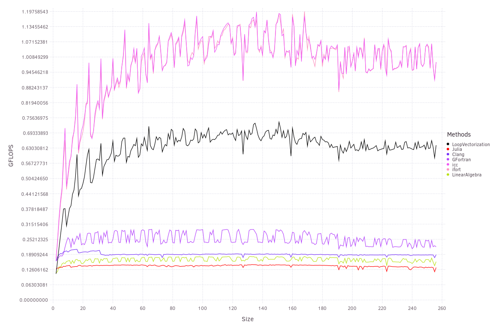

Special Functions
LoopVectorization supports vectorizing many special functions, for example, to calculate the log determinant of a triangular matrix:
function logdettriangle(B::Union{LowerTriangular,UpperTriangular})
A = parent(B) # using a triangular matrix would fall back to the default loop.
ld = zero(eltype(A))
@turbo for n ∈ axes(A,1)
ld += log(A[n,n])
end
ld
end
While Intel's proprietary compilers do the best, LoopVectorization performs very well among open source alternatives. A complicating factor to the above benchmark is that in accessing the diagonals, we are not accessing contiguous elements. A benchmark simply exponentiating a vector shows that gcc also has efficient special function vectorization, but that the autovectorizer disagrees with the discontiguous memory acesses:

The similar performance between gfortran and LoopVectorization at multiples of 8 is no fluke: on Linux systems with a recent GLIBC, SLEEFPirates.jl – which LoopVectorization depends on to vectorize these special functions – looks for the GNU vector library and uses these functions if available. Otherwise, it will use native Julia implementations that tend to be slower. As the modulus of vector length and vector width (8, on the host system thanks to AVX512) increases, gfortran shows the performance degredation pattern typical of LLVM-vectorized code.